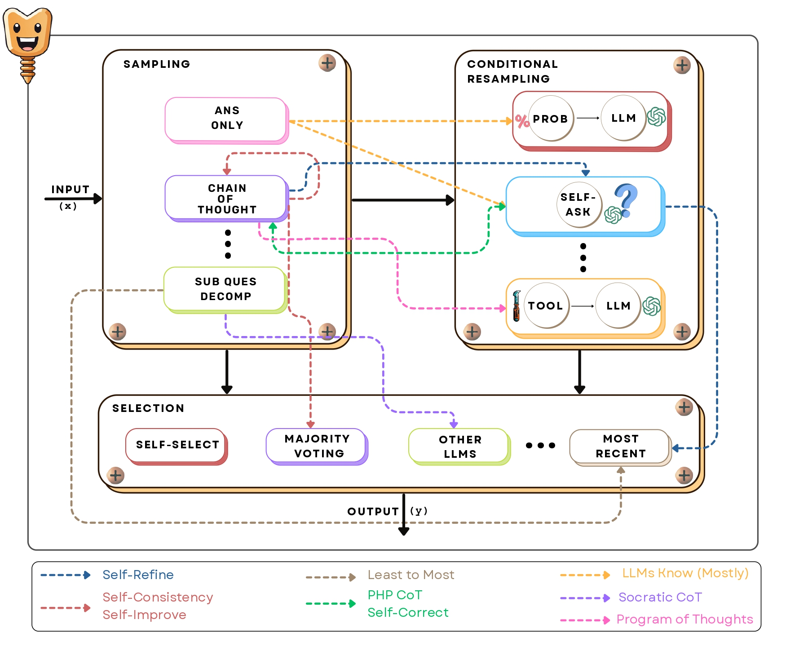
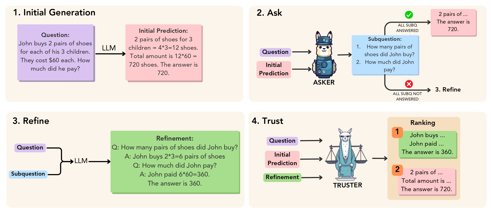

SCREWS: A Modular Framework for Reasoning with Revisions
Refinement in LLMs
Refinement in Large Language Models (LLMs) refers to the iterative process of improving or revising the model's generated output based on feedback, errors, or new information.
This approach is crucial for enhancing the accuracy and quality of the model's responses across various tasks, including reasoning, question answering, and problem-solving.
The refinement process typically involves several steps:
1. Initial Output Generation (Sampling): he LLM generates an initial response to a prompt or task.
This output might be directly an answer or could include a reasoning chain, depending on the method used (e.g., Chain of Thought reasoning).
2. Feedback and Evaluation: The initial output is evaluated either by the model itself or by external feedback mechanisms (such as a tool or another model)
to determine if it contains errors or if further improvement is possible.
3. Resampling or Revision: Based on the evaluation, the model revises its output, often by generating a new output using a different method or correcting specific parts of its previous response.
This process is known as conditional resampling, where the revision depends on the errors identified in the first output.
SCREWS: A Modular Framework for Reasoning with Revisions

Our Proposed Approach: SCREWS: Sampling, Conditional Resampling with Selection
In our work titled SCREWS: A Modular Framework for Reasoning with Revisions, we propose a comprehensive approach to improving reasoning in large language models (LLMs)
through iterative refinement. Our motivation stems from the observation that while LLMs can generate high-quality outputs, they are prone to errors, especially in tasks
requiring complex reasoning. Moreover, revisions generated by models often perpetuate the same errors due to homogeneous reasoning strategies.
To address these issues, we developed SCREWS, a modular framework that enhances the ability of LLMs to iteratively refine their outputs.
SCREWS comprises three key modules:
1. Sampling: This module generates initial outputs using various strategies, including the "Answer Only" approach (simple, direct answers), "Chain of Thought" (CoT),
which encourages step-by-step reasoning, and "Sub-question Decomposition," where complex problems are broken down into simpler components.
2. Conditional Resampling:
Once an initial output is produced, the model assesses whether a revision is necessary.
Conditional resampling methods like "Self-Ask" or tool-based resampling allow the system to correct initial errors by generating new outputs.
This module is particularly important for enhancing accuracy, as it enables the system to dynamically adjust its output based on feedback.
3. Selection:
This module chooses the final answer from the generated candidates, employing methods such as LLM-based selection (which uses the same model to evaluate different options) or simpler rule-based techniques like majority voting.
SCREWS highlights the importance of heterogeneous resampling, where different reasoning methods are applied to avoid repeating the same errors across iterations.
Key Insights
One of the key insights from our work is that heterogeneous resampling—employing different reasoning strategies for revisions—substantially improves the model's performance. Instead of using the same method for both initial sampling and resampling, SCREWS enables us to mix different strategies, preventing the model from repeating its errors across iterations. We show that this modularity allows us to flexibly apply different combinations of strategies depending on the task, whether it's solving arithmetic problems, answering multi-hop questions, or debugging code.
Results
In our experiments with state-of-the-art models like GPT-4, SCREWS consistently demonstrated a 10-15% improvement in accuracy over traditional sampling methods. The framework excels by introducing diversity in reasoning paths, which is crucial for complex tasks that require more than one-shot responses. By evaluating outputs across various reasoning chains and refining them as needed, SCREWS significantly enhances the quality of the final result.
The ART of LLM Refinement - Ask, Refine and Trust

Our proposed objective. Given a problem, an LLM first generates an initial prediction which is sent to an Asker that asks
relevant questions (sub-questions) to decide whether refinement is needed or not.
If all sub-questions are answered, it returns the initial prediction and no refinement is needed.
If not, the model refines the initial prediction using the subquestions.
Finally, the initial prediction and the refined response are sent to the Truster, which ranks them to decide if refinement was needed or
if the initial prediction was better.
In our paper The ART of LLM Refinement: Ask, Refine, and Trust, we introduce a novel approach to improving the reasoning capabilities of large language models (LLMs)
through a structured refinement process. LLMs have shown remarkable generative abilities but often struggle with accurately evaluating their own outputs,
especially in multi-step reasoning tasks. To address this, we propose a framework called ART, which stands for Ask, Refine, and Trust.
The ART framework is designed around three main stages:
1. Ask: After an initial prediction is generated, a smaller, fine-tuned model, referred to as the "Asker," evaluates whether refinement is needed
by asking relevant questions about the generated output. The Asker determines if the model should trust the initial answer or move forward with a refinement..
2. Refine:
If the Asker identifies that refinement is necessary, the LLM revisits the output and generates a revised answer based on the specific queries asked during the evaluation process.
3. Trust:
The final stage involves selecting the better result—either the original or the refined one—using a "Truster" model. This model is trained to rank the different candidates and make a
decision on which version is more likely correct.
Results
Through extensive experimentation on two multi-step reasoning tasks, GSM8K (mathematical word problems) and StrategyQA (open-domain question answering), we demonstrate that the ART framework improves the model's reasoning performance by around 5 percentage points over baseline self-refinement approaches. A key insight from our work is that using smaller models for decision-making (Asker and Truster) is both effective and computationally efficient compared to larger, fine-tuned models.
Conclusion
Both SCREWS and ART represent advanced methods for refining LLM outputs in reasoning tasks, but they differ in their approach to resampling, efficiency, and decision-making. SCREWS offers a more flexible and varied refinement process through its modular and heterogeneous strategy, while ART focuses on selective refinement with the help of smaller decision-making models, balancing accuracy with computational efficiency.